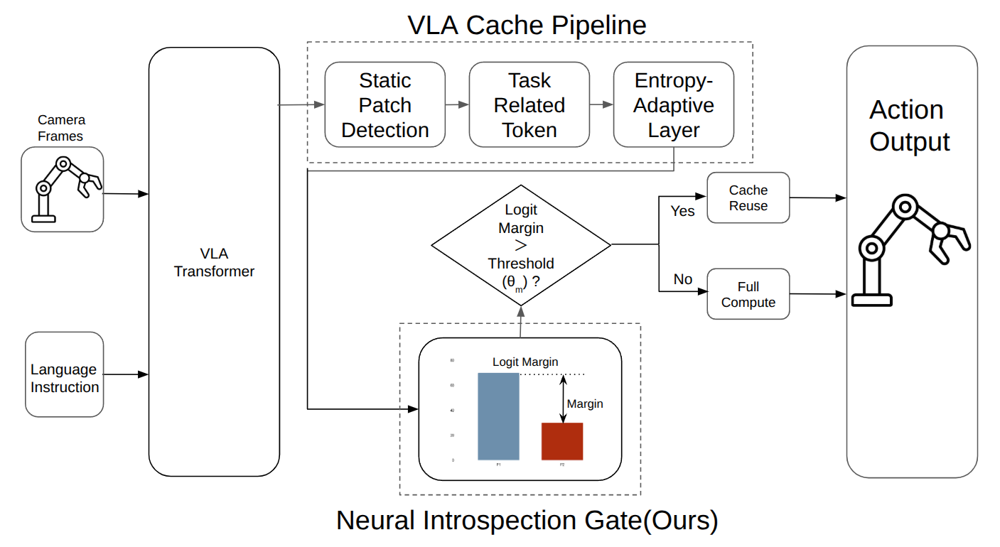
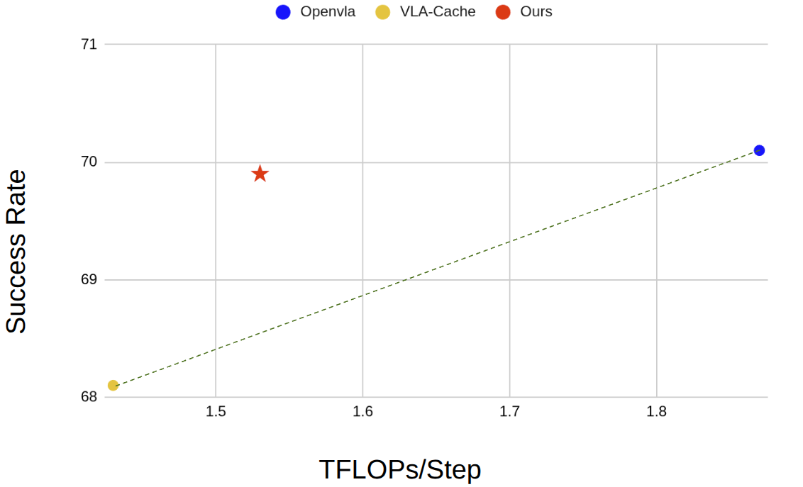

用一个几乎零成本的解码期信号（动作 token 的 top-1/top-2 概率差）当作「模型自己有多确定」的代理，不确定就把整份 KV 作废、全量重算。拿到的是：在缓存本来会拖后腿的任务上把失分收回来，且不需要训练；付出的是失效步的算力尖峰与一个必须按模型标定的阈值。
- 最小可复用件
- 「margin 计算 + 布尔门控」不到 20 行：读完上一步动作 logits 后算
mean(p1−p2)，低于阈值就跳过缓存路径。可直接套在 VLA-Cache 或任何「上一帧 KV 复用」实现外面。 - 主要风险
- margin 与输出校准绑定（换 checkpoint 要重标阈值）；门控抖动会造成逐 step 的二值算力与延迟跳变；对 flow/diffusion 动作头没有 logit，方法原则上不适用。
- 复现门槛
- 免训练、免改权重、不增参数与显存；只需能拿到动作解码的 logits。论文在单张 A100 上完成全部实验，未给真实机器人结果。
1 核心摘要
问题。VLA-Cache 一类跨控制步 KV 复用方法，判定「哪些视觉 token 的 K/V 可以沿用到下一步」时，只看观测空间：patch 像素余弦相似度、text-to-vision 注意力、各层注意力熵。这三个量回答的都是「输入看起来变了没有」，而不是「模型对当前这一步还拿不拿得准」。当画面几乎不动、但任务恰好进入需要精确决策的时刻（抓取对准、子任务切换），缓存会把陈旧表征喂进自回归解码，错误沿时间累积。
做法要点。作者在 VLA-Cache 的三段式流水线外面加了一个极简门控。每步 t 的动作解码产生 D 个动作 token，每个 token 都有一个覆盖全词表的 softmax；取每个动作维上最高与次高概率之差，对 D 维求均值，得到标量 margin mt−1（对应原文式 (1)）。下一步开始前比较 mt−1 与阈值 θm：低于阈值就把整份 KV cache 作废，对 N+|ℓ| 个 token 做完整前向；高于阈值则照常走 VLA-Cache 的三段复用。阈值按架构各标一次：OpenVLA 取 0.65，OpenVLA-OFT 取 0.50，在 LIBERO-Spatial 上粗网格搜出后，跨四个 suite 固定不变。
判定。这是一篇「给已有缓存策略补一个安全阀」的短文：机制本身几乎没有新组件，价值在于选对了信号——margin 只在「两个候选动作真的在互相竞争」时塌下去，而长尾词表噪声、attention sink、相位变化这些会污染熵类信号的因素都被它绕开了。代价同样清楚：失效是整帧全量、粒度最粗，且信号来自上一步，天然滞后一个控制周期。相对 VLA-Cache 的增量可以一句话概括：选择器一个字节都没改，只在它前面加了一个「这一步还信不信缓存」的开关。
2 复用机制定位
它命中的是流水线里的失效判定：不改「谁可以复用」，只改「这一帧还允不允许复用」。因为一旦判定失效就退化成全量前向，缓存粒度与层级预算这两格它都不动，只是在门控关闭时继承 VLA-Cache 的策略，所以标为部分命中。
| 维度 | Gated VLA-Cache 的做法 |
|---|---|
| 判定信号 | 上一步动作解码的 top-1/top-2 概率 margin 在 D 个动作维上的均值（标量），与阈值 θm 比较。信号来自模型输出端，不是输入图像端。 |
| 复用单位 | 不变：仍是视觉 patch token 的 K/V（p=14，N=256 对应 224×224 输入）。门控不挑选 token，只输出一个布尔量。 |
| 失效与重算 | 整体失效：整份 KV cache 清空，N+|ℓ| 全量前向，重建所有层、所有 token 的 K/V。论文没有局部失效、层级失效或「只重算高熵层」的变体，也没有对应消融。 |
| 层级策略 | 门控关闭时沿用 VLA-Cache 的 entropy-adaptive 每层复用比例；门控本身不含层信息，不参与「哪层多算」的分配。 |
| 在线性 | 因果：只用到第 t−1 步已解码出的 logits，不看未来帧，不需要光流或额外网络。不增加前向（logits 本来就要算），不增加参数与显存，不需要训练。但每步算力是二值的（OpenVLA 上 1.43 或 1.87 TFLOPs 两档），因此单步延迟呈双峰而非平滑变化。 |
一个容易被忽略的接口细节：margin 是解码完之后才有的量，而缓存复用决策发生在下一次 prefill 之前。所以它天然是「事后评判上一步」，不是「事前预测这一步」。这一点决定了它的全部时序性质，也是第 6 节讨论抖动与滞后的出发点。
3 问题与动机
3.1 观测空间启发式具体在哪里失灵
VLA-Cache 的三段判定各有盲区，而三者共享同一个前提：输入的视觉变化程度可以代理「模型此刻需不需要新信息」。
第一段用像素余弦相似度（τ=0.996）挑静态 patch。抓取对准阶段，夹爪与物体的相对位姿变化可能只落在几十个像素上，整幅图相似度依然很高；而被判为静态的区域恰恰是决定抓取成败的区域。第二段用 text-to-vision 注意力剔除任务相关 token，但这份注意力是在混用了陈旧 K/V 的上下文里算出来的——用可能已经偏掉的表征给缓存做体检，存在自证的嫌疑（）。第三段按层注意力熵分配复用比例，调节的是「算多少」，不回答「该不该算」。
作者给出的判断很直接：这些量测的是「看起来变了没有」，而真正要问的是「模型对当前动作还有没有把握」。二者在大多数平稳帧上同向，在关键帧上会分叉。
3.2 本文假设：margin 会先于视觉证据塌下去
假设是：缓存一旦让模型失去判别力，最直接的体现不是画面差异，而是输出分布里两个候选动作开始互相竞争——top-1 与 top-2 的概率差收窄。此时即使像素几乎没变，也应当整帧重算。

原图：arXiv e-print 源码 figures/pipeline.png，对应原文 Figure 2。上半虚线框是 VLA-Cache 原有的 Static Patch Detection → Task Related Token → Entropy-Adaptive Layer 三段；下半虚线框是本文新增的 Neural Introspection Gate：从动作解码的 logits 算 margin，与 θm 比较后决定走 Cache Reuse 还是 Full Compute。
3.3 作者实测过、但被否掉的替代信号
论文第 VI 节交代了三组失败尝试，这段比方法本身更有信息量，因为它划定了「什么样的信号能用于缓存门控」：
| 候选信号 | 作者观察 | 失效原因（作者归因） |
|---|---|---|
| 动作分布熵 | 无法区分高置信与低置信步 | 词表约 32,000，绝大多数 token 概率近零；「90% vs 5%」与「45% vs 40%」的总熵差被长尾噪声淹没。 |
| 注意力熵 | 整段 episode 几乎恒定 | attention sink：大量注意力质量被初始句法 token 吸走，视觉注意力的真实转移（夹爪→目标物）扰动不了总熵。 |
| 动作增量（相邻步动作差） | 有信号，但语义不对 | 它更像相位指示器：接近与抓取阶段大、抬起之后小；和观测空间启发式共享同一盲点，测的是「在做什么」而非「有多确定」。 |
三者被否掉的方式不一样：熵类是被结构性噪声污染（分母太大、sink 太强），动作增量是被语义错配。margin 之所以成立，是它只在决策瓶颈处取两个数相减，天然免疫长尾，也不受 sink 影响。这段论证是本文最值得迁移的部分——它说明可选信号不是越多越好，而是要能定位到「决策正在被弥合的那条缝」。
4 方法拆解
4.1 输入与信号：margin 怎么取、在哪一步取
第 t−1 步自回归解码出动作 token 序列 (a1t−1, …, aDt−1)。对每个动作维 d，解码时都有一份覆盖全词表的 softmax，记最高与次高概率为 p1、p2，则
mt−1 = (1/D) · Σd=1..D [ p1(adt−1) − p2(adt−1) ]。
三点必须写清楚，否则复现会对不上：
- 取全部动作维，不是首个 token。公式对
D个动作维求均值；OpenVLA 与 OpenVLA-OFT 都是「每个动作维一个 token」，所以 margin 是整条动作向量的平均置信度，不是某一个维度的。论文正文未给出D的具体取值。 - 取的是概率差，不是 logit 差。先 softmax 再相减，因此数值落在
[0,1]，阈值0.65才有直观含义（约等于「首选动作比次选动作高 65 个百分点」）。换成 raw logit 差，阈值量纲完全不同。 - 取上一步，不是当前步。门控用的是
mt−1去决定第t步的缓存策略。这是原文明确承认的 one-step reactive lag。
4.2 门控开关与整帧失效
推理流程见原文 Algorithm 1，可以压成下面这个顺序；改动量确实只有「一个 if」：
m ← mean(p1 − p2) over D action dims # 复用上一步解码的 logitsif m < θm: invalidate entire KV cache full forward over N + |ℓ| tokens # 全层、全 token store fresh K/Velse: static patch detect → task-relevant filter → layer-wise reuse partial forward over non-cached tokensdecode action tokens a_t; return a_t, cache
注意失效的粒度是整帧全量：不是只重算被判为变化的 patch，不是只重算高熵层，也不是「回滚到上上一步的缓存」。这带来一个很干净的性质——失效永远不会让表征比不复用更差，最坏情况只是白算一次。作者在局限里也是这么辩护的：「失效总是安全的，只是偶尔浪费」。
代价是算力变成两档。OpenVLA 平均每步 1.43 TFLOPs（缓存路径）或 1.87 TFLOPs（全量路径），没有中间态；这意味着控制循环看到的是双峰延迟，而不是平滑降级。
4.3 阈值怎么定：一次性标定，跨任务复用
阈值不是自适应的。作者做法是：在 LIBERO-Spatial 上做粗网格搜索，为每个架构选一个使成功率最好的 θm，然后跨四个 suite 固定。OpenVLA 得 0.65，OpenVLA-OFT 得 0.50。两者不同的原因是动作头形式不同（离散自回归 vs 并行动作维解码），输出分布的校准尺度不一样，作者明确说「最优 margin 尺度取决于具体 VLA 架构的输出校准」。
论文没有做在线自适应（如按历史 margin 分位数定阈值），只在讨论里把它列为未来工作。工程含义是：换模型就要重标一次，但换任务不用。第 5 节的敏感性实验支持这一点——在 θm 的较宽邻域内成功率变化很小。
4.4 训练与推理差异、在线边界
训练阶段没有任何改动：不加参数、不加损失、不改权重，模型完全冻结。所有逻辑都在推理侧，且只依赖已有的 forward 输出。因此它可以叠在任何「解码期能拿到动作 logits」的自回归 VLA 上，也可以叠在任何「跨帧复用 KV」的实现上——包括不是 VLA-Cache 的缓存方案。
在线边界有三条：(1) 因果，只用历史；(2) 无需额外前向或额外显存，只多存一个标量；(3) 每步计算量随门控二值跳变，单步延迟不可预测。第三条是它进入实时控制栈时最实际的障碍，第 6 节展开。
5 证据与实验
5.1 设置
| 项目 | 内容 |
|---|---|
| 模型 | OpenVLA（7B，Prismatic VLM + Llama-2 backbone）；OpenVLA-OFT（优化微调 + 并行动作维解码）。两者均用官方权重。 |
| 基准 | LIBERO 四个 task family：Spatial（10 个空间关系任务）、Object（10 个物体类别任务）、Goal（10 个目标条件任务）、Long（10 个长程多步任务）。每任务 50 episodes，每 suite 500 episodes。 |
| 指标 | 成功率 SR（%）、每步计算量 TFLOPs/step。未报告 wall-clock latency、显存、控制频率。 |
| 硬件 | 单张 NVIDIA A100（UTokyo Azure）。全部为仿真，无真实机器人。 |
| 对照 | Full Inference（官方权重直推）；VLA-Cache（默认超参 τ=0.996、top-k=120）。同 backbone、同环境自测，可横比。 |
| 超参 | θm=0.65（OpenVLA）、0.50（OFT），在 LIBERO-Spatial 上粗网格搜索后固定。 |
5.2 OpenVLA：缓存有害时收回失分
| Suite | Full SR / TFLOPs | VLA-Cache SR / TFLOPs | Gated SR / TFLOPs | 相对 VLA-Cache |
|---|---|---|---|---|
| Spatial | 78.8 / 1.89 | 78.8 / 1.43 | 79.4 / 1.55 | +0.6，多花 0.12 |
| Object | 70.4 / 1.86 | 69.4 / 1.44 | 67.8 / 1.54 | −1.6，多花 0.10 |
| Goal | 77.2 / 1.83 | 74.0 / 1.40 | 77.4 / 1.50 | +3.4，多花 0.10 |
| Long | 54.0 / 1.88 | 50.2 / 1.43 | 54.8 / 1.54 | +4.6，多花 0.11 |
| 平均 | 70.1 / 1.87 | 68.1 / 1.43 | 69.9 / 1.53 | +1.8，多花 0.10 |
数字取自原文 Table I（OpenVLA，SR 为 %，TFLOPs/step）。最后一列为本页按表内数值相减得到。
读表提醒：这里的 Full 是本文在 A100 上自测的 70.1%，而 VLA-Cache 原文自报的 LIBERO 平均是 75.0%（其原文在 RTX 4090 上测得）。两者评测协议、随机种子与并行设置是否一致，论文未交代，因此不要把本文的 SR 与 VLA-Cache 页面上的 SR 直接横比；本文内部的三个数字是同环境自测，可以比。同理，本文的 TFLOPs 也不等同于 VLA-Cache 原文报告的 CUDA latency。
三个方向的结果要分开读：
Goal 与 Long 是论文的主论据。LIBERO-Goal 上 VLA-Cache 掉 3.2 个点（77.2→74.0），门控后回到 77.4；LIBERO-Long 上掉 3.8 个点（54.0→50.2），门控后 54.8，比全量还高 0.8。作者对后者的解释是「选择性复用带来的时间平滑」——在自信的步骤上，复用陈旧表征筛掉了帧间抖动。这一解释属于作者推测，论文没有做分离实验来证明。
「回收超过 100%」的计算口径。它是相对本表内 VLA-Cache 相对 Full 的损失算的，不是相对某个外部基线：Goal 为 (77.4−74.0)/(77.2−74.0)=106%，Long 为 (54.8−50.2)/(54.0−50.2)=121%。因为分子包含「超过 Full」的部分，所以能大于 100%。需要提醒：这两个 suite 的分母只有 3.2 与 3.8 个百分点，500 episodes 的粒度是 0.2 个点，超过 100% 的部分（+0.2 与 +0.8）落在单次评测的噪声量级内，不宜当作「超过全量推理」的强结论。
Object 是明确的反例。该 suite 上缓存只掉 1.0 个点，门控后反而比两个基线都低（67.8 vs 69.4 / 70.4）。作者归因于「短时程任务上多余的失效打断了缓存的时间平滑」。这条负面结果很关键：门控不是单调增益，它在「缓存本来就安全」的场景里是纯成本。
5.3 OpenVLA-OFT：门控基本沉默
| Suite | Full SR / TFLOPs | VLA-Cache SR / TFLOPs | Gated SR / TFLOPs |
|---|---|---|---|
| Spatial | 93.8 / 4.00 | 93.8 / 3.11 | 94.0 / 3.23 |
| Object | 98.4 / 3.96 | 98.6 / 3.05 | 98.6 / 3.08 |
| Goal | 97.2 / 3.94 | 96.8 / 3.06 | 97.0 / 3.07 |
| Long | 93.8 / 3.98 | 94.0 / 3.05 | 93.0 / 3.13 |
| 平均 | 95.8 / 3.97 | 95.8 / 3.07 | 95.7 / 3.13 |
数字取自原文 Table II（OpenVLA-OFT）。
OFT 本身对缓存鲁棒：VLA-Cache 在任一 suite 上最多掉 0.4 个点，Object 与 Long 甚至略有提升。三种方法的平均差距在 ±0.1 内（95.7 / 95.8 / 95.8），门控平均多花 0.06 TFLOPs。作者把这一组当作「门控在不需要时确实沉默」的证据——因为 margin 一直很高，几乎不触发。
但要注意这组数据同时说明：在 OFT 上，整个缓存机制带来的收益本来就很薄（SR 持平、算力 3.97→3.07）。也就是说，这篇论文的正面结论主要建立在 OpenVLA 这一较老的架构上；对已经很强的策略，缓存与门控都不是瓶颈。
5.4 门控什么时候触发

原图：arXiv e-print 源码 figures/long_trial.png，对应原文 Figure 5。蓝线为逐控制步的 margin（纵轴 0.4–1.0），粉色带对应原文图注所说的门控触发区，红色虚线按 Approach / Grasp / Lift 切分两个抓放周期。可直接读出的是：margin 在 grasp 段集中出现深谷（最低触及 0.4 附近），而 approach 与 lift 段整体偏高——这正是「触发点聚集在决策瓶颈处」的直观依据；图内未标出阈值线的数值。
作者报告：在 LIBERO-Long 上平均约 24% 的步骤触发失效，即 76% 的步骤仍在复用；在简单任务（Spatial、Object）上触发率 低于 10%。触发点在时间上聚集于抓取对准与子任务切换，而不是均匀分布。
本页据 Table I 做一个粗核对：若全量步占比为 f，平均算力应满足 1.43 + f·(1.87−1.43) = 1.53，解得 f ≈ 0.23。这与 Long 的 24% 同量级，但四套件平均应当低于 24%（Spatial/Object 都不到 10%）。差异可能来自表内数值的两位小数舍入，也可能来自各 suite 的 TFLOPs 基数不同；论文没有直接报告四套件的平均触发率，此处仅为推算，不宜当结论。
5.5 阈值敏感性与代价曲线

原图：arXiv e-print 源码 figures/pareto.png，对应原文 Figure 4。横轴 TFLOPs/step，纵轴成功率；蓝点为 Full Inference（70.1%，1.87），黄点为 VLA-Cache（68.1%，1.43），红星为本文方法（69.9%，1.53）。虚线为两点连线，红星位于其上方。
敏感性实验（原文 Fig. 6 / Fig. 7）显示存在一段平台：OpenVLA 在 LIBERO-Spatial 上把 θm 从 0.55 扫到 0.75，成功率落在 78.2%–79.4%；OFT 把 θm 从 0.40 扫到 0.60，成功率落在 93.2%–94.0%。两端的行为符合预期：θm→0 时门控永不触发，退化为 VLA-Cache；阈值过高则频繁失效，算力上升且打断缓存的时间平滑，成功率反而下降（θm=0.75 时 78.2%）。因此「阈值不敏感」的准确表述是：在平台内不敏感，平台两侧各有明确的失效方向。
代价侧的官方口径：平均 69.9% @ 1.53 TFLOPs，比全量（70.1% @ 1.87）低 0.2 个点、省 18% 算力；相对 VLA-Cache 多花 0.10 TFLOPs，换回 1.8 个点。换算成「保留了多少缓存节省」：(1.87−1.53)/(1.87−1.43)=77%，即摘要里的「80%」。
5.6 未报告的部分
以下项目在已核验的论文正文、表格与图中均未出现：wall-clock 延迟及其分布（p50/p99）、显存占用、控制频率、真实机器人实验、SIMPLER 或 VLN 类基准、与其他缓存方法（如按 head 可靠性加权的 TVCache、可学习选择器）的组合、触发失效时的单步开销测量、以及按任务类型的失败案例分析。作者在局限中明确写了「real robot validation remains future work」。
6 优点、局限与 VLA 适配
可迁移
1. 失效判定与选择器解耦。门控只消费最终 logits、只输出一个布尔量，因此可以直接包在任何「上一帧 KV 复用」实现外面——包括 token 剪枝、层跳过、甚至跨 episode 的 KV 检索。这是它作为「最小可复用件」最大的价值。
2. 信号选择的论证方式。第 3.3 节的三组否定实验（动作熵、注意力熵、动作增量）给出了可复用的判据：门控信号必须落在决策瓶颈处，且不能被长尾词表或 attention sink 稀释。任何新的门控设计都该先过这三关。
3. 失效方向的安全性。失效 = 全量重算，单调安全；调参失误最坏只浪费算力，不会把系统推到「比不复用更差」。这让它可以先上线再调阈值。
4. 零成本与免训练。不增参数、不增显存、不改权重，对已部署模型是纯推理侧补丁。
不成立的前提
1. 动作必须被离散成 token。margin 需要每个动作维上的 top-1/top-2 softmax。flow matching / diffusion 动作头（π0、SmolVLA 一类）没有这个分布，方法原则上不适用；论文只测了两种离散解码架构，却把结论表述为「可透明接入任何自回归 VLA 推理栈」——这个表述严格讲只覆盖有 logits 的自回归头。
2. 高 margin 等于缓存可信。margin 只反映输出分布有多尖，不反映 K/V 是否陈旧。一个「自信地错」的动作 margin 同样很高，这时门控不会触发。作者在局限里承认它无法区分「缓存导致的不确定」与「模型固有的模糊」，但没有给出误判率的测量。
3. 模糊性在相邻步之间持续。用 t−1 的 margin 决定 t 的缓存，隐含假设「上一步不确定 → 这一步仍需谨慎」。10–20 Hz 下通常成立，但在快速相位切换（抓住的一瞬间、碰撞瞬间）会漏拍。
4. 单阈值跨 checkpoint 有效。阈值与输出校准绑定，换微调版本、换量化精度都要重标；论文只给了同族两个模型的标定值。
6.1 延迟风险：双峰而不是斜坡
因为失效粒度是整帧全量，单步算力只有两档。论文只给平均 TFLOPs，没给延迟分布，也没给触发步与未触发步各自的耗时。在固定频率控制下，这意味着最坏情况的最坏情况：连续若干步 margin 都低于阈值（例如模棱两可的接触阶段），系统会连续走全量路径，瞬时算力回到 1.87 TFLOPs，节省归零且调度抖动最大。工程上需要把「门控触发率」当作一等指标监控，而不是只看平均 TFLOPs。
6.2 闭环风险：滞后一拍 + 抖动
滞后一拍是结构性的：失效决策建立在模型已经表现出不确定之后，纠正总是晚一个控制周期。对抓取对准这类窗口很窄的动作，晚一拍可能正好错过。抖动则是阈值附近的次生问题——margin 在 θm 上下浮动会让缓存路径逐步切换，动作分布随之在「平滑版」与「新鲜版」之间跳，产生本文未评估的闭环效应。
6.3 最小改造方案
如果要在自己的栈里落地，本页建议的最小改造（属本页分析，论文未实现）：(1) 在动作解码后缓存 m 与触发标志，下一步 prefill 前读取，不改动模型；(2) 加迟滞与冷却——进入失效用 θlow、退出用 θhigh，且触发后 k 步内不再触发，把二值抖变压成有界频率；(3) 对没有 logits 的 flow head，用「多次采样速度场的分歧度」或「混合权重 top-1/top-2 差」作为替代信号——这是同构思路，但未在已核验材料中验证，需自行标定。
7 落地清单
- 打通 logits 出口。在动作解码处取每个动作维的 top-2 softmax 概率，算
mean(p1−p2)并落盘为逐 step 标量。验收：不改权重、不增加前向、不增加显存（只多一个 float）。 - 标定
θm。在目标模型 + 一个中等难度 suite 上跑 50–100 episodes 粗网格（OpenVLA 参考 0.55–0.75，OFT 参考 0.40–0.60），取平台中点而非峰值。验收：阈值 ±0.05 内成功率波动 < 1 个点。 - 把触发率当一等指标。分别统计简单/困难任务的触发率（参考：<10% 与 ~24%）以及触发步、非触发步各自的 p50/p99 步时。验收：p99 不超过控制周期的 1.2 倍；否则加冷却步数。
- 门控粒度先做整帧。不要一上来实现「只重算高熵层」或「只重算变化 patch」的局部失效——论文没有该变体，也没有消融，收益与风险都未验证。
- 双指标验收。目标是「回收 ≥80% 的缓存精度损失」且「保留 ≥70% 的计算节省」，两者必须同环境自测（同一 Full / 同一 VLA-Cache 复现），不要跨论文抄数。
- 盯住反例场景。短时程、缓存本就安全的任务上，门控是纯成本（原文 Object 上 −1.6）。上线前先确认你的任务分布更接近 Goal/Long 还是 Object。
来源：Zhijie Wu, Kento Kawaharazuka, Kei Okada, "Neural Introspection Gating for Adaptive KV-Cache Reuse in Vision-Language-Action Models", arXiv:2608.10824v1, 2026；数字取自 Table I（OpenVLA）、Table II（OpenVLA-OFT）、第 V-E 节（触发率）、第 V-F 节与 Fig. 6/7（阈值敏感性）、第 VI 节（替代信号与局限）。VLA-Cache 基线数字均取自本文同环境复现值，非 VLA-Cache 原文自报值。
图像说明：三张图均直接取自 arXiv e-print LaTeX 源码的原始 PNG（figures/pipeline.png、long_trial.png、pareto.png），转白底后未作裁切或重绘，图内标题与标注为作者原图所有。对应原文 Figure 2、Figure 5、Figure 4。
相关页面：VLA-Cache · 跨控制步 KV 复用 · LAC · 可学习复用策略 · TVCache · 层与 head 可靠性 · 返回专题二